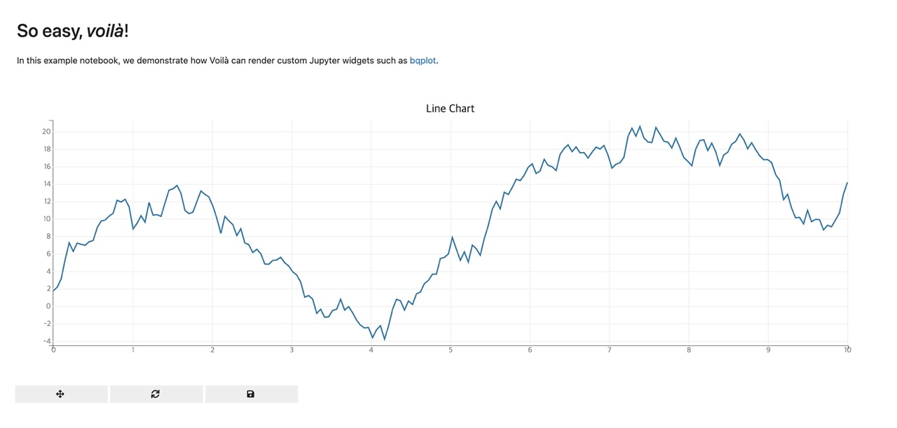

Voila는 Jupyter 노트북에서 생성된 대화형 웹 애플리케이션을 만드는 오픈 소스 도구입니다. Voila를 사용하면 Jupyter 노트북을 실행하면서 생성된 셀의 결과를 대화형 대시보드로 전환할 수 있습니다.
Jupyter 노트북은 데이터 분석 및 인공 지능 작업을 위한 인기있는 도구 중 하나입니다. 그러나 노트북의 코드와 결과는 주로 노트북 파일 자체에서만 볼 수 있습니다. 이는 작업을 공유하거나 다른 사람에게 결과를 시각적으로 보여줄 때 제한적일 수 있습니다.
Voila는 이러한 제한을 극복하기 위해 개발되었습니다. Jupyter 노트북을 실행하면 대화형 대시보드로 전환되며, 코드와 결과를 다른 사용자와 쉽게 공유할 수 있습니다. 사용자는 대시보드에서 셀에 작성된 파이썬 코드를 실행하고 결과를 볼 수 있습니다. Voila는 여러 종류의 출력 형식을 지원하며, 대시보드에 그래프, 표, 이미지, 동영상 등 다양한 타입의 컨텐츠를 추가할 수 있습니다.
Voila는 독립형 애플리케이션이기 때문에 Jupyter 노트북과 별도로 실행됩니다. 사용자는 Voila를 사용하여 Jupyter 노트북을 대화형 대시보드로 변환하고, 대시보드를 웹 브라우저에서 열어서 작업을 수행할 수 있습니다.
Voila는 파이썬 뿐만 아니라 R, Julia 등 다른 프로그래밍 언어로 작성된 노트북도 지원합니다. Voila를 사용하면 대화형 대시보드를 만들고 다른 사용자와 공유하는 것이 쉬워집니다. 이를 통해 데이터 분석 및 인공 지능 작업의 결과를 더욱 효과적으로 공유하고 활용할 수 있습니다.
설치하기
pip install voila
실행하기
git clone https://github.com/voila-dashboards/voila
cd voila
voila notebooks/bqplot.ipynb

예제가 실행 되지 않고 No module named 'bqplot'와 같은 안내 메시지가 나타나면 의존성 모듈을 설치합니다.
pip install bqplot
No Jupyter kernel for language 'python' found와 같은 안내 메시지가 보이면 IPython 커널을 설치합니다.
python3 -m pip install ipykernel
python3 -m ipykernel install --user